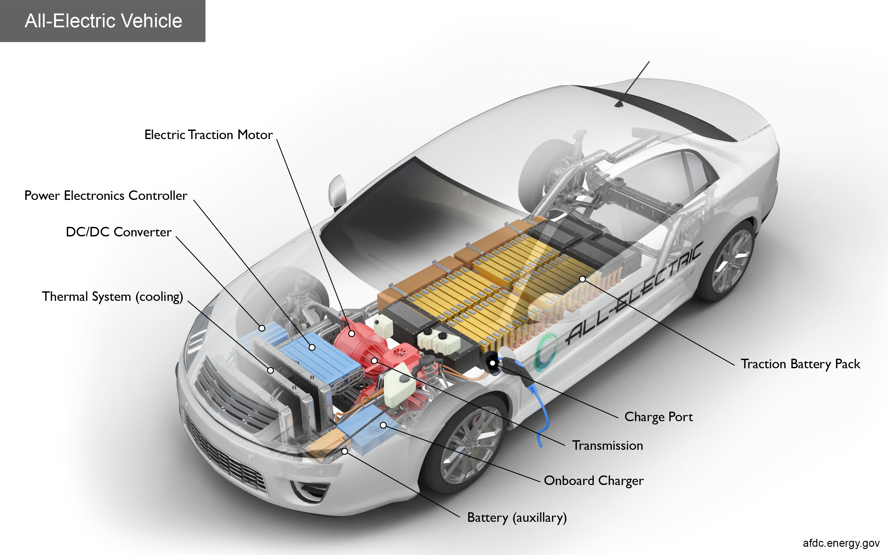

@@include('header.htm')
@@include('sidenav.htm',{'home':'', 'about':'', 'contact':'', 'pages':'active', 'home2':'', 'category':'', 'postDetails':'active', 'pnp':''})

<div class="main-content">
    @@include('mobile-nav.htm')

    <div class="container py-4 my-5">
        @@include('search-form.htm')
        
        <div class="row justify-content-between">
            <div class="col-lg-10">
                
                <h1 class="text-white add-letter-space mt-4">A Revolution Unfolding in the Automotive Industry</h1>
                <ul class="post-meta mt-3 mb-4">
                    <li class="d-inline-block mr-3">
                        <span class="fas fa-clock text-primary"></span>
                        <a class="ml-1" href="#">7-minute read</a>
                    </li>
                    <li class="d-inline-block">
                        <span class="fas fa-list-alt text-primary"></span>
                        <a class="ml-1" href="#">Automotive Innovation</a>
                    </li>
                </ul>

                <p>The automotive industry is undergoing a significant transformation, embracing intelligent manufacturing technologies such as AI, IoT, and collaborative robots. This revolution is paving the way for enhanced production efficiency, sustainability, and the mass adoption of Electric Vehicles (EVs). As manufacturers adopt smart manufacturing systems, they are not only enhancing productivity but also meeting the increasing consumer demands for innovation, sustainability, and adaptability in production lines.</p>

                <p>Smart manufacturing, the cornerstone of Industry 4.0, is reshaping the automotive landscape with advanced technologies like AI and IoT. These technologies help optimize processes such as quality control, defect detection, and predictive maintenance, making the manufacturing of EVs more efficient. The integration of collaborative robots (cobots) ensures that human workers and machines can operate safely and productively together on assembly lines, accelerating the industry’s move toward automation.</p>

                <p>For stakeholders and investors, this shift represents an opportunity to be part of an innovative revolution. As smart manufacturing techniques continue to evolve, companies that are quick to implement these technologies will gain a competitive edge in the global market, especially with the rising demand for EVs. The combination of data analytics, AI, and collaborative robots offers the chance to improve not just productivity, but also sustainability through energy optimization and waste reduction. Investing in companies leading the way in these areas is key to staying ahead of the curve.</p>

                <div class="blockquote bg-dark my-5">
                    <p class="blockquote-text pl-2">The future of automotive manufacturing is intelligent. With Industry 4.0 technologies, manufacturers can improve efficiency, sustainability, and adapt to the needs of a dynamic market.</p>
                    <span class="blockquote-footer text-white h4 mt-3">Automotive Expert</span>
                </div>

                <div class="widget">
                    <h1 class="widget-title text-white d-inline-block mb-4">Read the Full Article</h1>
                    <a href="https://leyton.com/ca/insights/articles/a-revolution-unfolding-in-the-automotive-industry/" target="_blank" class="btn btn-primary">Read More </a>
                </div>
            </div>
        </div>
    </div>

    @@include('footer-block.htm')
</div>

@@include('footer.htm')
